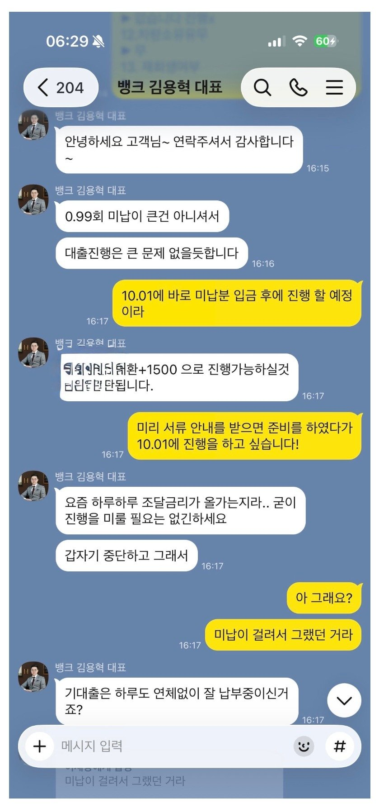
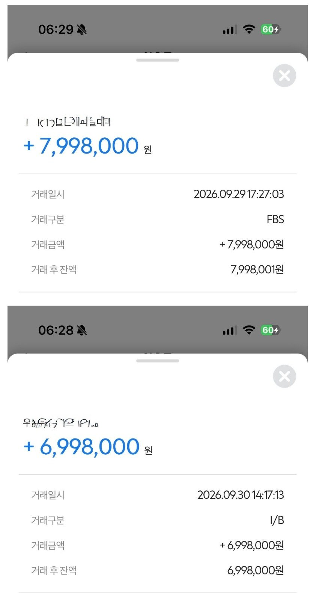

[개인회생 인가 추가 대출] 김용혁 이사님/이현섭 과장님 감사합니다
재직형태: 직장인
재직기간: 1년 10개월
4대보험: 가입
소득: 연봉 3,300
채무내역: 개시 후 대출 500
필요서류: 신분증 초본 건강보험 득실확인서,납부확인서 변제계획안 채권자 목록
저 같은 경우 3월에 개시 후 6월에 500대출을 받았고
9월에 인가를 받았습니다 급하게 목돈이 필요해서 뱅크앤론에 가입 후 상담을 부탁드렸습니다
0.9회 미납이 있었고 필요금액은 1000~1500이였습니다 인가를 받은지 1달도 되질 않았고
0.9회 미납분이 있어서 10월에 진행을 하려고 상담을 드렸는데
상세하게 설명 후 진행을 해주셨고
기존 채무 500 대환 조건 +0.9회(회생) 바로 납부 조건으로 800,700 두곳에서 빠르게 승인을 확정 받았습니다.
추후 미납 없이 잘 납부하다가 더 낮은 금리로 갈아탈 예정
다음에도 잘 부탁드립니다
김용혁 대표님 이현섭 과장님 수고 많으셨습니다 ^^


https://cafe.naver.com/cityman88/312287